A 5-Minute Journey Through History
From a magnetized spoon in ancient China to the GPS satellites overhead — how one invention rewired civilization.
SCROLL TO EXPLORE ↓
Question 01 — Definition
A compass is a navigational instrument that uses Earth's magnetic field to indicate direction. A magnetized needle aligns itself with the planet's magnetic poles, reliably pointing toward magnetic north — giving any traveler an absolute reference in an otherwise featureless sea, desert, or sky.
More broadly, the compass is humanity's oldest tool for answering the oldest question: "Which way do I go?"
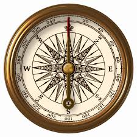
Question 02 — Mechanism & Evolution
Earth behaves like a giant bar magnet, generating a magnetic field that runs pole to pole. A compass needle is itself a small magnet — its north-seeking end is drawn toward Earth's magnetic north pole.
Even inside a ship's hull, under overcast skies, with no landmarks in sight, the needle always points north. This was nothing short of miraculous to early navigators.
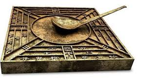
Han Dynasty craftsmen carved lodestone into a ladle shape balanced on a bronze plate. The handle always pointed south. Used first for Feng Shui and geomancy — not yet for navigation.
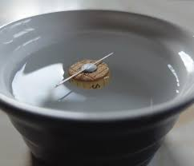
A magnetized needle rubbed on lodestone and floated on water. This wet compass was the first practical navigational tool, guiding ships along Chinese and Southeast Asian coastlines.
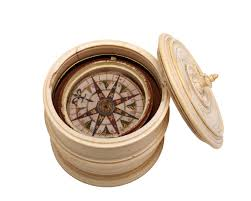
Via Arab traders, the compass reached Europe. The dry pivot compass — needle on a pin inside a box — let European sailors cross the Mediterranean without following the coast, even in winter.
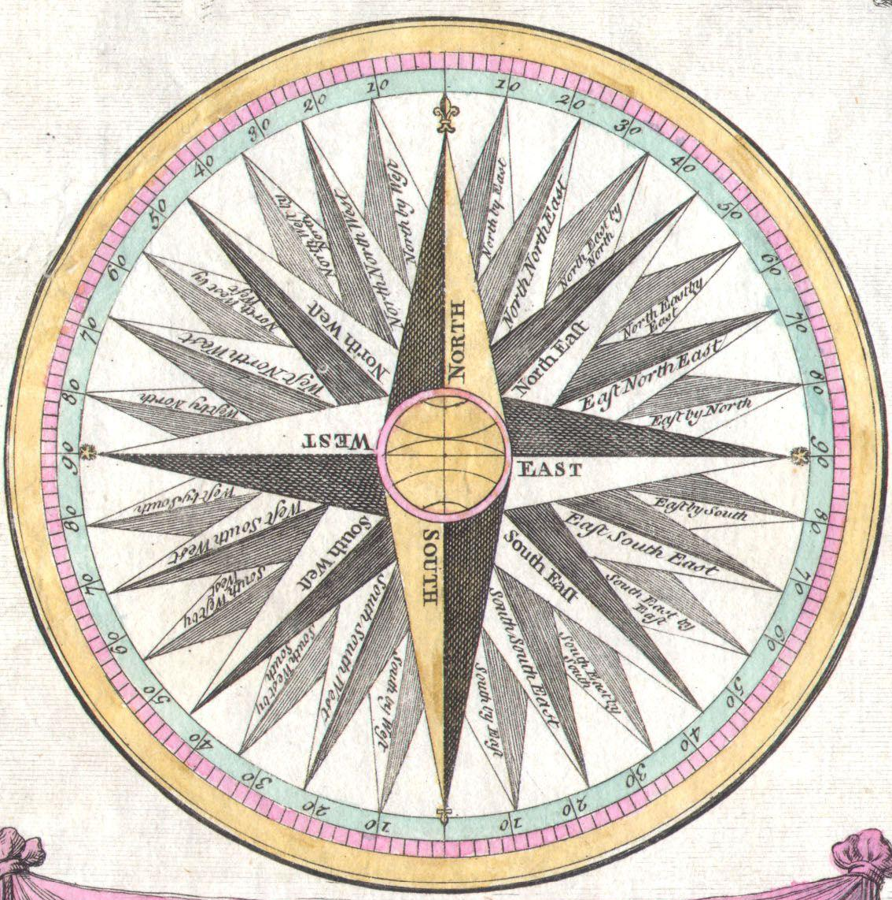
Columbus, Vasco da Gama, and Magellan all sailed by compass across open oceans. The 32-point compass rose card was added for easier reading. Navigation became a science — exploration became an industry.
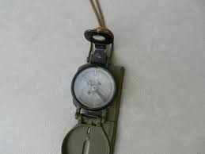
World Wars demanded precise, rugged navigation. The lensatic compass — with a magnifying sighting lens — became standard military issue. Liquid-damped needles settled instantly even in combat.
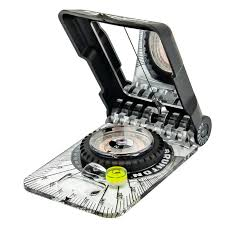
Modern baseplate compasses use liquid damping, declination adjusters, and mirror sighting. Every smartphone also contains a micro-magnetometer chip — a digital compass used by maps and navigation apps billions of times daily.
Question 03 — Societal Impact
The compass was arguably the first technology that democratized exploration. Before it, sailors hugged coastlines, terrified of open water. The compass gave them permission to venture into the unknown — and that changed the entire human story.
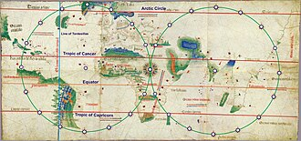
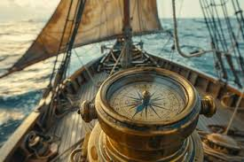
Question 04 — Commercial Impact
Before the compass, sea voyages were seasonal gambles. After it, they became reliable, repeatable business operations. This shift — from adventure to industry — laid the foundations of global capitalism.
The compass made the unknown predictable. And predictability is the engine of commerce.
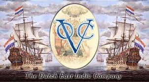
Question 05 — Modern Relevance
We live in the compass's world. Every supply chain, every flight path, every container ship navigating the Pacific is a direct descendant of the iron needle pointing north. Today the compass has evolved into digital form — yet its promise remains: know where you are, so you can get where you're going.
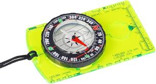
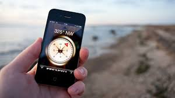